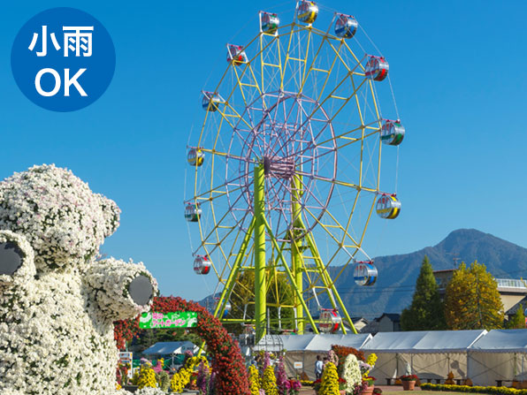
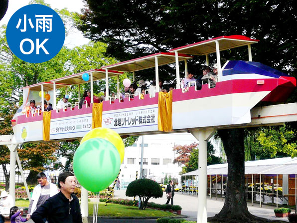
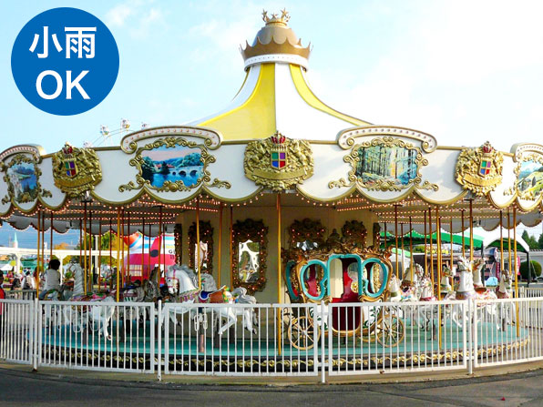

き ： 菊人形 彩り豊かな 秋祭り
一言でいうと？
越前市民なら誰もが一度は行った菊と遊具の大公園
本当は「武生中央公園」というのですが、秋になると秋祭りとして菊人形の展示が行われるので、地元の人には「菊人形」と呼ばれています。
菊人形とは？
菊で飾られたお人形！
期間中に会場に展示される、菊の花や葉で飾られたお人形です。
大河ドラマの1シーンを再現していたり、最近ではディズニーキャラクターの菊人形が登場しました。
たけふ菊人形は日本三大菊人形に数えられています。
もちろんそのままの菊を楽しむこともできます。
期間中の会場は2万株の菊がうつくしく咲きほこります。
ちなみに、越前市の花は「菊」なんですよ！知っていましたか？
遊具はなにがある？
家族で楽しめるバイキングや観覧車！
公園内には大人も子供も楽しめる遊具がたくさん！
遊具に乗るには券がいるので、たくさん買ってから行きましょう！
・遊具回数券（遊具券100円券 11枚つづり）1,000円
・遊具券（単券）100円
★バイキング 400円

★アストロファイター 400円

★大観覧車 300円
★モノレール 300円
★メリーゴーラウンド 300円
お問い合わせ
0778-21-0175
会場 ≫ 武生中央公園
住所 ≫ 越前市高瀬2丁目
開場期間 ≫ 10月はじめ～11月はじめ
開場時間 ≫ 9：00～17：00
定休日 ≫ 期間中無休
電話 ≫ 0778-21-0175(たけふ菊人形事務局)
入場料 ≫ 無料
越前市民なら一度は行ったことのある菊人形！菊の着物を着た菊人形たちは圧巻の一言です。見た目もいいですが、香りも菊のいい香りがします。私も何度も遊びに行きました。小学生の頃は「仰天」に乗るのが怖くて怖くて…(バイキングが一回転するような遊具です)。いつか乗ろうと思っていたら無くなってしまいました。